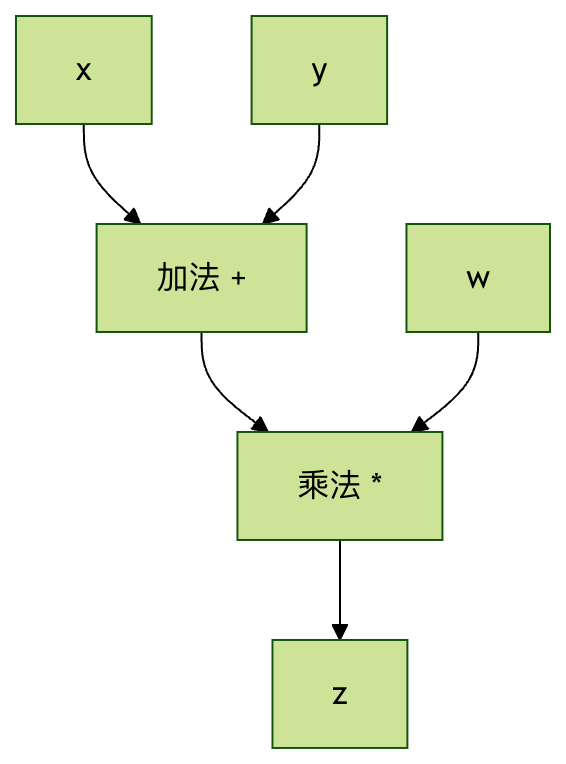
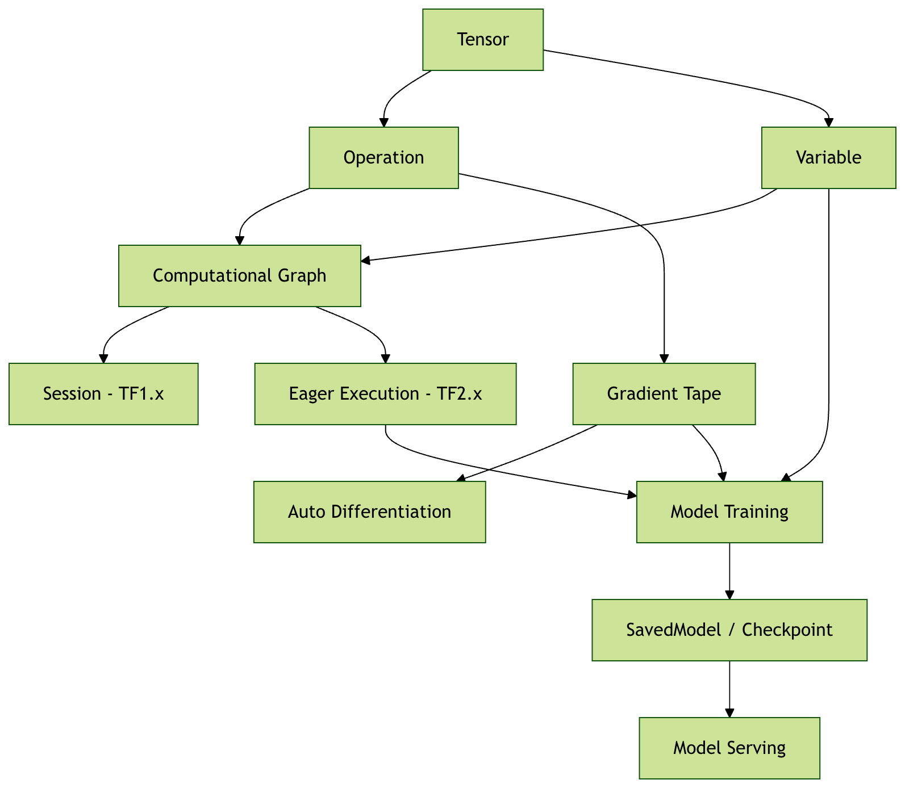

TensorFlow コアコンセプト
TensorFlow という名前は、データを処理する中核構造であるテンソル（Tensor）と計算フロー（Flow）に由来しています。
TensorFlow はエンドツーエンドのオープンソース機械学習プラットフォームであり、その中核となる強みは次のとおりです：
- 柔軟な計算グラフモデル：動的グラフと静的グラフの両モードをサポート
- クロスプラットフォーム展開能力：CPU、GPU、TPU、モバイルデバイス上で実行可能
- 豊富なエコシステム：TensorFlow Lite（モバイル）、TensorFlow.js（ブラウザ）などのサブプロジェクトを含む
- 本番環境対応：研究から本番までをカバーする完全なツールチェーンを提供
コアコンセプトの解説
テンソル（Tensor）
テンソルは TensorFlow における最も基本的なデータ構造であり、次のように理解できます多次元配列の一般化概念です。
数学的な観点では、テンソルはベクトル、スカラー、その他のテンソル間の線形関係を表すことができる多重線形関数です。
簡単な類推：
- スカラー（0次元テンソル）：1つの数値、例：
5 - ベクトル（1次元テンソル）：1列の数値、例：
[1, 2, 3, 4] - 行列（2次元テンソル）：数値の表、例：
[[1, 2], [3, 4]] - 3次元テンソル：数値の立方体、例えばカラー画像（高さ×幅×色チャンネル）
- より高次元のテンソル：例えば動画データ（時間×高さ×幅×色チャンネル）
テンソルの主要な属性
例
import tensorflow as tf
# 2x3 の行列テンソルを作成
tensor = tf.constant([[1, 2, 3], [4, 5, 6]])
print(f"形状 (Shape): {tensor.shape}") # (2, 3)
print(f"数据类型 (Dtype): {tensor.dtype}") # int32
print(f"维度 (Rank): {tf.rank(tensor)}") # 2
print(f"设备 (Device): {tensor.device}") # /job:localhost/replica:0/task:0/device:CPU:0
主要な属性の説明：
形状（Shape）：各次元のサイズを表します
(2, 3)2行3列の行列を表します(224, 224, 3)224×224 ピクセルの RGB 画像を表します
データ型（Dtype）：テンソル内のデータの型
tf.float32：32ビット浮動小数点数（最も一般的）tf.int32：32ビット整数tf.bool：ブール値tf.string：文字列
次元/階数（Rank）：テンソルの次元数
- スカラー：階数 0
- ベクトル：階数 1
- 行列：階数 2
デバイス（Device）：テンソルが格納されるデバイスの場所
- CPU：
/device:CPU:0 - GPU：
/device:GPU:0
機械学習におけるテンソルの重要性
データ表現：
- 入力データ：画像、テキスト、音声はすべてテンソルとして表現できる
- モデルパラメータ：重みとバイアスはどちらもテンソル
- 中間結果：計算過程のすべてのデータはテンソル
- 出力結果：予測結果、損失値など
実際の例：
- 画像分類：入力テンソルの形状
(batch_size, height, width, channels) - テキスト処理：入力テンソルの形状
(batch_size, sequence_length) - 時系列：入力テンソルの形状
(batch_size, time_steps, features)
計算グラフ（Computational Graph）
計算グラフは、ノードと边数学演算を表すグラフ構造です：
- ノード（Node）：数学演算（加算、乗算、活性化関数など）を表します
- エッジ（Edge）：データの流れの経路（テンソル）を表します
簡単な例：
计算 z = (x + y) * w 的计算图：
x ──┐
├─→ [+] ──→ [×] ──→ z
y ──┘ ├
w ────────────┘

計算グラフの利点
1. 自動微分：
- 勾配を自動計算し、逆伝播を実現できます
- 複雑な勾配の公式を手動で導出する必要がありません
2. 最適化の機会：
- コンパイル時最適化：演算の融合、冗長性の排除
- 実行時最適化：メモリ再利用、並列計算
3. 可視化デバッグ：
- TensorBoard を使用してモデル構造を可視化
- 複雑なモデルの理解とデバッグに役立ちます
4. 分散計算：
- グラフの異なる部分を異なるデバイスに割り当てることができます
- マシンをまたいだ分散トレーニングをサポート
静的グラフ vs 動的グラフ
TensorFlow 1.x（静的グラフ）：
例
import tensorflow.compat.v1 as tf
tf.disable_v2_behavior()
# 計算グラフを定義
x = tf.placeholder(tf.float32, shape=[None, 784])
W = tf.Variable(tf.random.normal([784, 10]))
b = tf.Variable(tf.zeros([10]))
y = tf.matmul(x, W) + b
# セッションを作成して実行
with tf.Session() as sess:
sess.run(tf.global_variables_initializer())
result = sess.run(y, feed_dict={x: input_data})
TensorFlow 2.x（動的グラフ/即時実行）：
例
import tensorflow as tf
# 演算を直接実行
x = tf.constant([[1.0, 2.0, 3.0]])
W = tf.Variable(tf.random.normal([3, 2]))
b = tf.Variable(tf.zeros([2]))
y = tf.matmul(x, W) + b
print(y) # 即座に結果を取得
セッション（Session）と即時実行（Eager Execution）
TensorFlow 1.x のセッション機構
TensorFlow 1.x では、計算グラフの構築と実行は分離されています：
2段階のプロセス：
- 構築フェーズ：計算グラフを定義するが、計算は一切実行しない
- 実行フェーズ：セッション内でグラフを実行し、結果を取得する
セッションの役割：
- グラフの実行環境を管理
- リソース（メモリ、デバイス）を割り当てて管理
- グラフ実行のコンテキストを提供
3.2 TensorFlow 2.x の即時実行
TensorFlow 2.x はデフォルトで即時実行を有効にしており、TensorFlow をより「Pythonic」にしています：
即時実行の特徴：
- 即座に評価：演算は定義後すぐに実行される
- デバッグが容易：Python のデバッグツールを使用可能
- 直感的なプログラミング：通常の Python コードを書くように
比較例：
例
import tensorflow as tf
a = tf.constant(2.0)
b = tf.constant(3.0)
c = a + b
print(f"結果: {c}") # 結果: 5.0
# 値に直接アクセス可能
print(f"c の numpy 値: {c.numpy()}") # c の numpy 値: 5.0
グラフモード vs 即時実行モード
即時実行モード（デフォルト、開発・デバッグに適する）：
- 演算は即座に実行される
- デバッグと理解が容易
- パフォーマンスはやや低い
グラフモード（本番導入に適している）：
- 完全な計算グラフを事前に構築
- より良い最適化の機会
- より高い実行効率
グラフモードに切り替え：
例
def compute_function(x, y):
return x * y + x
# この関数はグラフにコンパイルされます
result = compute_function(tf.constant(2.0), tf.constant(3.0))
変数（Variable）と定数（Constant）
定数（Constant）
定数は不変（イミュータブル）なテンソルであり、一度作成すると変更できません：
例
scalar_const = tf.constant(3.14)
vector_const = tf.constant([1, 2, 3, 4])
matrix_const = tf.constant([[1, 2], [3, 4]])
# 定数の値は変更できません
print(scalar_const) # tf.Tensor(3.14, shape=(), dtype=float32)
定数の用途：
- ハイパーパラメータ（学習率、バッチサイズなど）を保存する
- トレーニング不要の設定データを保存する
- 計算における固定値として
変数（Variable）
変数は可変（ミュータブル）なテンソルであり、通常はモデルパラメータを保存するために使用されます：
例
weight = tf.Variable(tf.random.normal([2, 3]))
bias = tf.Variable(tf.zeros([3]))
print(f"初期重み:\n{weight}")
# 変数の値を変更
weight.assign(tf.ones([2, 3]))
print(f"変更後の重み:\n{weight}")
# 部分更新
weight[0, 0].assign(5.0)
print(f"部分更新後:\n{weight}")
変数の重要な特性：
- 状態保持：トレーニング中に状態を保持する
- 勾配追跡：変数に関する勾配を計算できる
- 最適化可能：最適化アルゴリズムによって更新できる
- 保存可能：チェックポイントファイルに保存できる
変数 vs 定数の使用シーン
| 特性 | 変数（Variable） | 定数（Constant） |
|---|---|---|
| 可変性 | 変更可能 | 変更不可 |
| 主な用途 | モデルパラメータ（重み、バイアス） | ハイパーパラメータ、入力データ |
| 勾配計算 | サポート | 非サポート |
| メモリ使用量 | 永続ストレージ | 一時ストレージ |
| 代表的な例 | W = tf.Variable(...) |
learning_rate = tf.constant(0.01) |
データフローと自動微分
順伝播（フォワードプロパゲーション）
計算グラフ内でデータが入力ノードから出力ノードへ流れるプロセス：
例
import tensorflow as tf
# 入力データ
x = tf.constant([[1.0, 2.0]])
# モデルパラメータ
W1 = tf.Variable(tf.random.normal([2, 3]))
b1 = tf.Variable(tf.zeros([3]))
W2 = tf.Variable(tf.random.normal([3, 1]))
b2 = tf.Variable(tf.zeros([1]))
# 順伝播
hidden = tf.nn.relu(tf.matmul(x, W1) + b1) # 隠れ層
output = tf.matmul(hidden, W2) + b2 # 出力層
print(f"最終出力: {output}")
自動微分（Automatic Differentiation）
TensorFlow はGradientTapeを使用して演算を記録し、勾配を自動的に計算します：
例
x = tf.Variable(3.0)
# GradientTape を使用して演算を記録
with tf.GradientTape() as tape:
y = x**2 + 2*x + 1 # y = x² + 2x + 1
# dy/dx を計算
gradient = tape.gradient(y, x)
print(f"x=3 のとき、dy/dx = {gradient}") # 2x + 2 = 8 になるはず
GradientTape の動作原理：
- 演算を記録：tape はそのコンテキスト内のすべての演算を記録する
- 逆方向グラフを構築：勾配計算用の逆方向計算グラフを作成する
- 勾配を計算：連鎖律を使用して勾配を計算する
トレーニングループにおける概念の統合
例
import tensorflow as tf
# モデルとデータ
model = tf.keras.Sequential([
tf.keras.layers.Dense(10, activation='relu'),
tf.keras.layers.Dense(1)
])
x_train = tf.random.normal([100, 5])
y_train = tf.random.normal([100, 1])
optimizer = tf.keras.optimizers.Adam(0.01)
# トレーニングステップ
@tf.function
def train_step(x, y):
with tf.GradientTape() as tape:
predictions = model(x)
loss = tf.keras.losses.mse(y, predictions)
gradients = tape.gradient(loss, model.trainable_variables)
optimizer.apply_gradients(zip(gradients, model.trainable_variables))
return loss
# トレーニングを実行
for epoch in range(10):
loss = train_step(x_train, y_train)
print(f"Epoch {epoch}: Loss = {loss:.4f}")
コアコンセプトのまとめ
概念の関係図
TensorFlow 中核概念の関係：
输入数据 (Tensor) ──→ 计算图 (Graph) ──→ 输出结果 (Tensor)
↑ ↓
常量/变量 前向传播
↑ ↓
参数存储 ←──── 梯度更新 ←──── 自动微分
↑
GradientTape

その他の拡張
クリックしてノートを共有
ノートは本記事の内容を拡張したものである必要があります！
記事の投稿は、こちらをクリック
登録招待コードの取得方法
ノートを共有する前にログインが必要です！
登録招待コードの取得方法